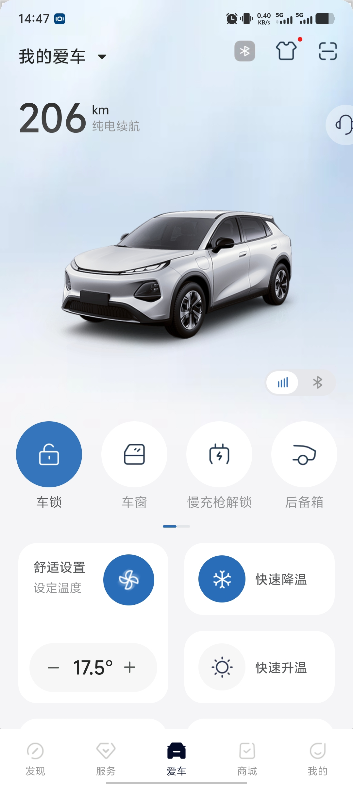
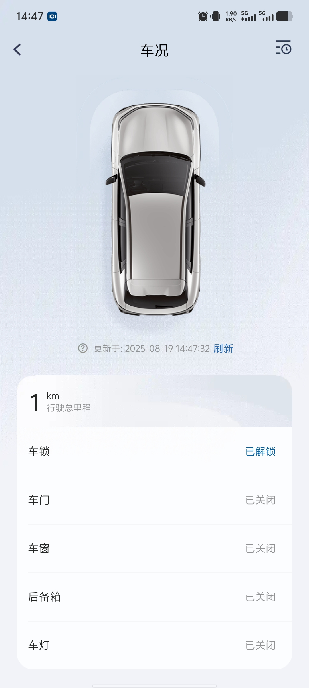
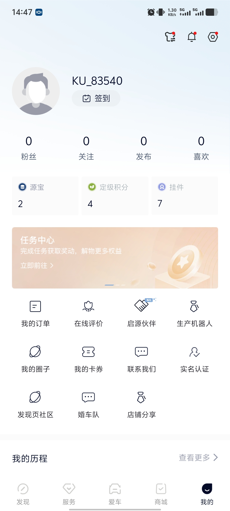

Об этом приложении
Приложение Changan Qiyuan — это мобильное приложение интеллектуального подключения к автомобилю, разработанное Changan Qiyuan для предоставления пользователям Changan Qiyuan интеллектуальных сервисов поездок.
Используя это приложение, вы можете:
1. Определять местоположение автомобиля и запрашивать состояние автомобиля в реальном времени.
2. Выполнять дистанционное управление автомобилем: например, отпирать/запирать замки, мигать фарами и подавать звуковой сигнал для поиска автомобиля, включать/выключать система кондиционирования и т. д.
3. Просматривать данные и отчеты о поездках.
4. Осуществлять мониторинг автомобиля с помощью геозон.
Примечание: данное приложение требует прохождения регистрации на реальное имя при покупке автомобиля и активации телематических сервисов Changan; часть функций доступна только на автомобилях, оснащенных оборудованием THU.